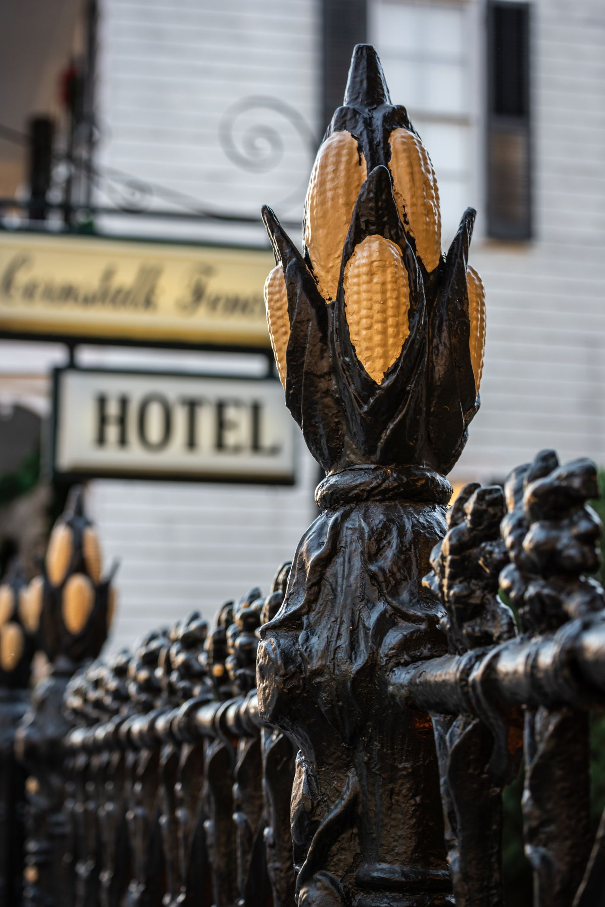

Care and Upkeep
Keeping a Wrought Iron Fence in Shape
Three habits do most of the work.
3
Key PointsWhat to expect

01
Regular Cleaning
Cleaning an iron fence on a regular basis prevents many short-term problems. Maintenance service can keep it clean by removing caked-on debris before it causes further damage and more costly problems.

02
Regular Inspection
Routine inspections catch problems early. A maintenance check looks for worn paint and signs of cracking, and if multiple issues turn up, you get honest advice on whether replacement makes sense.

03
Prompt Rust Removal
Rust gets removed with sandpaper or a standard wire brush, and a protective anti-rust spray goes on to keep it from building up again. Quick action keeps a small spot from spreading.